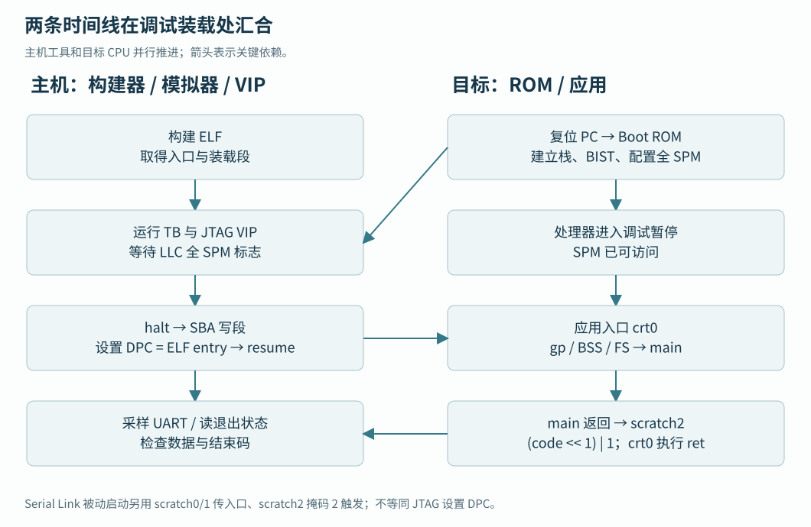

第四篇 · 裸机软件、启动与验证
16 · JTAG 与程序加载调试
核实外部调试接管的真实等待条件。
本章目录 · 节与小节
核实外部调试接管的真实等待条件。 前置：15 · Boot ROM、启动模式与应用初始化。
16.1 调试传输与模块职责
JTAG 是调试传输链路。调试传输模块（DTM）在 JTAG TCK 域接收调试操作，再通过 调试模块接口（DMI）访问系统域的 Debug Module（DM）。DM 可以停止/恢复 hart（一个硬件执行线程），执行寄存器访问命令，还能通过 SBA，即系统总线访问，主动读写目标内存。DMI 地址属于调试协议空间，不是 CPU 的 MMIO 地址。
16.2 主机与目标的两条时间线
主机可以在启动模拟器之前完成软件构建。目标 CPU 的复位逻辑只知道 BootAddr，默认指向 0x02000000 的 Boot ROM；它不会自行读取主机路径里的 ELF。仿真启动后，VIP 先提供时钟和复位，ROM 开始执行，另一边的加载任务等待目标存储达到可装载状态。两条时间线在装载和入口交接处汇合。

16.3 JTAG 装载前置条件
16.3.1 CFG_SPM_LOW.bit0 与暂停应答
jtag_elf_halt_load 在 DutCfg.LlcNotBypass 为真时轮询 LLC CFG_SPM_LOW.bit0，然后写 DMCONTROL.haltreq，并轮询 DMSTATUS.allhalted。它既不等待 ROM C main，也不等待 clint_get_core_freq 返回。该位来自软件写配置，不能单独扩大成所有初始化完成标志。
16.3.2 装载条件与应用入口条件
Boot ROM 在写 SPM 配置/COMMIT 后还有扩展 sp 的指令。实际 halt 落在哪条指令要看目标 PC，尤其当应用 spm.ld 通过零栈符号继承进入时栈时，应检查 DPC、sp 和可用栈范围。VIP 没有显式等待这些后续步骤，因此“能开始 SBA 装载”和“应用已有正确栈”应分别验收。
本节依据：jtag_elf_halt_load / jtag_elf_run。
本节依据：SPM 配置后扩展栈的实际顺序。
16.4 Debug 的寄存器地址空间与复位责任
16.4.1 DMI 地址、字段和副作用
本地 riscv-dbg 的 README 声明 Debug 0.13.1；JTAG DTM 承载 DMI，DM 支持 abstract register、program buffer 与 SBA。DMI 地址是调试寄存器编号，不是 CPU MMIO 的字节偏移。DMCONTROL(0x10) 控制 dmactive/haltreq/resumereq，DMSTATUS(0x11) 查询 halted/running 等；ABSTRACTCS(0x16)/COMMAND(0x17) 管理抽象命令，SBCS(0x38)/SBADDRESS0(0x39)/SBDATA0(0x3c) 管理系统总线访问。
调试程序应先激活 DM、轮询目标状态，再执行命令；busy 时不重发，cmderr/sberror 应按字段语义清除并记录。读取 SBDATA 若启用 read-on-data 会触发后续读，不能把调试窗口自动刷新当成无副作用。复位时 DM 状态、hart reset 和系统 rst_ni 是不同边界；本地 ndmreset 未接入系统复位，需未来 wrapper 明确实现。
SoC 的 16 个 scratch 是普通 RW、复位为 0；BOOT_MODE/RTC_FREQ/HW_FEATURES 等由硬件输入和参数提供，是 RO，不应把 RO 的初始显示值当成可编程时钟控制。应用退出的 scratch2 编码是软件/VIP 约定，不是调试规范。可用 scratch6/7 做隔离的教学写读验证，但应先确认没有与当前固件约定冲突。
16.5 JTAG、Debug Module 与实际装载
16.5.1 ELF 段怎样通过 SBA 到达内存
TB 从 +BINARY 取得主机 ELF 路径。C++ 的 elfloader 通过 DPI（SystemVerilog 与 C/C++ 互操作接口）向 VIP 提供 entry 和装载段：用 p_paddr 作为地址，从文件取 p_filesz 字节。VIP 请求 hart0 停止，写 SBADDRESS/SBDATA，DM 便发出 AXI 事务，经过互连写入 SPM。这条路径可以检查真实总线应答。
16.5.2 设置 DPC 与恢复执行
装载后，VIP 通过 DATA 和 COMMAND 写 DPC（调试状态中的恢复执行地址）为 ELF entry，再发 resumereq。应用开始从 _start 执行。对应字段见DMI 寄存器表述；每一步检查 busy、错误与完成应答。
16.5.3 BSS 责任与段尾验证
当前 loader 对 p_memsz 大于 p_filesz 的部分打印未补零提示，应用 BSS 仍由 crt0 清零。JTAG 写段循环为 i <= sec_len 且按 8 字节步进，最后一次索引/写入存在段尾越界风险。这是源码检查发现，尚未动态复现或修复；目标环境应以 1/7/8/9 字节段、相邻段和守卫区读回做专项验证。

启动选择与 scratch 协议；GPT/raw 读取；DMI 寄存器及字段；SoC 寄存器属性；ROM 初始化；ELF 解析；JTAG / UART / Link 加载；应用入口和退出
主机生成 ELF 时，CPU 已经执行了 _start 吗？
尚未发生目标执行。ELF 只是主机文件；只有目标完成复位准备、程序字节装载和入口交接后，CPU 才能执行其中的 _start。